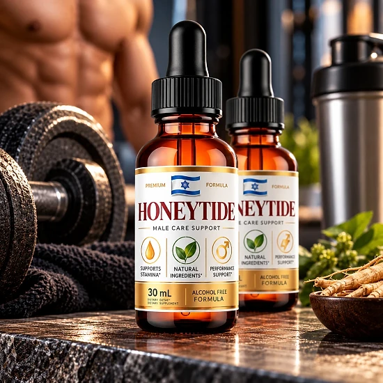
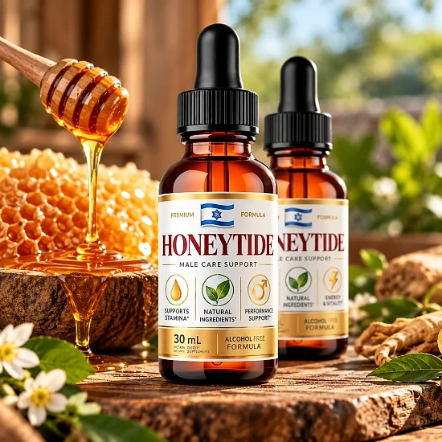
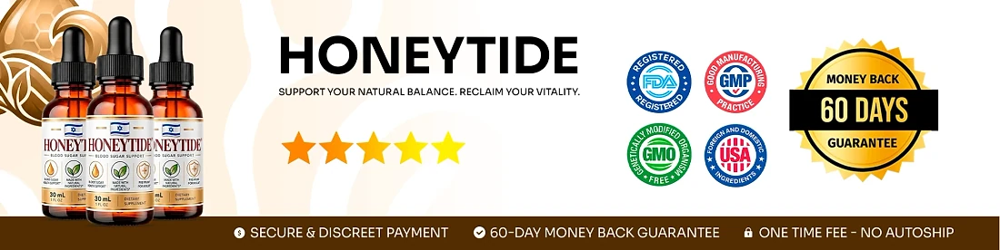

What Is Honeytide And How Does It Work?
Honeytide is a dietary supplement in liquid drop form, sold in a 1 fl oz (30 mL) dropper bottle labeled "Blood Sugar Support". It was created to support healthy blood sugar levels and overall metabolic health as part of a daily routine.
The official sales page highlights six key ingredients: Chromium Picolinate, Gymnema leaf, African Mango seed, Green Tea leaf, Maca root and Panax Ginseng. The label on the bottle goes further and lists a longer 200 mg proprietary blend of botanicals and amino acids in each 1 mL serving.
How is it designed to work? The brand explains the formula on three fronts. Chromium is included to support the body's response to insulin. Gymnema and African Mango are there to help with the way the body handles sugar from meals. Maca and Panax Ginseng, two adaptogens, are added to help with oxidative stress and fatigue.
The brand says the goal is steadier energy through the day and support for balanced carbohydrate metabolism, without relying on quick fixes.
According to the label, Honeytide is made in the USA with globally sourced ingredients in an FDA-registered facility, and it is distributed by Instituto Experience in Lakeland, Florida. Orders are processed by BuyGoods as a one-time payment with no auto-ship.
Results may vary from person to person, and a supplement works best alongside balanced meals, regular activity and the care plan agreed with your doctor. It is not a replacement for prescribed medication, and the website does not promise a fixed timeline, so it is fair to give any daily routine a few weeks before judging how you feel.
Honeytide is a dietary supplement and is not intended to diagnose, treat, cure, or prevent any disease.
Honeytide Ingredients
The Supplement Facts panel on the Honeytide label shows a serving of 1 mL, and 30 servings in each bottle. It lists one mineral with a stated amount and a proprietary blend that holds the rest of the formula:
Chromium (as chromium picolinate), 0.7 mcg: an essential mineral involved in how the body responds to insulin.
Proprietary Blend, 200 mg: Maca root, Grape seed, Guarana seed, African Mango seed, Eleuthero root, Astragalus root, Green Tea leaf, Gymnema leaf, Coleus forskohlii root, Capsicum fruit, Grapefruit fruit, Panax Ginseng, Raspberry Ketones, L-Glutamine, L-Tyrosine, L-Arginine, Beta-Alanine, Monoammonium Glycyrrhizinate, GABA, L-Ornithine and L-Carnitine.
Other ingredients listed are glycerin, water, organic lemon extract, stevia extract, xylitol, sodium benzoate, potassium sorbate, citric acid and natural flavors.
Because most ingredients sit inside a proprietary blend, the amount of each one is not disclosed, and the whole blend is only 200 mg per serving. Guarana naturally contains caffeine. The descriptions on the sales page reflect how these ingredients are generally known, not proven results. Show the label to your doctor, especially if you take medication for blood sugar or already use products with caffeine.
Honeytide Side Effects
The official website says Honeytide is made with high-purity, naturally derived ingredients and does not list specific side effects. It also describes it as an active, stimulating supplement and recommends that people under 18 or with pre-existing health conditions, especially heart problems or high blood pressure, consult a healthcare professional before use. The label adds pregnant or nursing women to that list.
Because the formula is meant to support blood sugar, the most important precaution is for people who already take diabetes medication or insulin. Chromium, Gymnema and Panax Ginseng may add to the effect of these medicines, so your doctor should review the product first and may want you to check your levels more often.
The blend also contains guarana and green tea, both sources of caffeine, plus capsicum and other stimulating ingredients that may cause restlessness, a faster heartbeat or trouble sleeping in sensitive people. The label says not to exceed the recommended dose.
Stop using it and seek medical advice if you notice dizziness, shakiness, sweating, palpitations or any other unusual reaction, which can be signs that blood sugar is dropping too low. Bring the bottle to your appointment so your doctor can read the full list.
Honeytide Dosage
According to the label and the sales page, the directions are simple: shake well before each use, then take 1 or 2 full droppers daily, placing the liquid in your mouth and swallowing.
For best results, the brand recommends taking it in the morning, preferably before a meal. Because the blend contains caffeine from guarana and green tea, a morning dose is also less likely to affect your sleep.
The label lists 30 servings of 1 mL in each bottle, so one bottle lasts about a month at one dropper a day. Start with the lower amount if you are new to the product, and do not go beyond the directions on the label. If you take medication for blood sugar, ask your doctor which amount is right for you before you begin.
Store the bottle away from heat, light and humidity, in a cool, dry place and out of reach of children, as printed on the label. Do not use it if the safety seal is damaged or missing.
Honeytide works best together with balanced meals, regular physical activity, good sleep and regular checkups with your doctor and care team.
Honeytide – Refund Policy
Every order of Honeytide is covered by a 60-day Results or Refund Guarantee counted from the date of purchase, which gives you time to try the drops and decide whether they are right for you.
According to the refund policy on the official website, there is a minimum trial period of 30 days, and the return process must start within 60 days of the purchase date. Only sealed bottles are eligible, shipping and customs fees are not refunded, return shipping is paid by the customer, and a 20% restocking fee is deducted from the total.
Step 1 – Request the authorization code: email the support team at contact@customercs.com to start the return. The label also lists the phone number +1 (507) 448-8190, and the team usually replies to emails within 48 business hours.
Step 2 – Send the bottles back: follow the return instructions you receive with the code.
Step 3 – Receive your refund: once the returned items are received and verified, the refund goes to the original payment method and may take 5 to 10 business days to appear on your statement. You will receive a confirmation email.
Keep your unopened bottles sealed until you are sure about the product, and save your order confirmation email from BuyGoods so you have your order number ready.
Honeytide Customer Reviews
-
Michael Thompson — Houston, TXVerified Purchase – 6 Bottles
“… just two weeks into taking Honeytide, I began to see my glucose readings stabilize and my energy levels soar.”
-
Sarah Rodriguez — Chicago, ILVerified Purchase – 6 Bottles
“… I started on Honeytide, and day by day, my glucose levels became more balanced... I even noticed my cravings diminishing, without those sudden urges for sweets… And I swear, it felt like I regained control of my health in just 3 weeks!”
-
Lauren Rio — Seattle, WAVerified Purchase – 6 Bottles
“… My blood sugar readings are now consistently in the healthy range, and I feel so much more energetic. I can hardly believe it, it's truly life-changing.”
Honeytide – Where To Buy
Honeytide is sold through its official website, where orders are completed through a secure checkout from BuyGoods, an established online retailer. According to the FAQ, every purchase is a one-time payment with no auto-ship, recurring charges or hidden fees.
Bottles listed by unknown third-party sellers may look the same, but there is no way to verify their origin or how they were stored, which raises real concerns about quality and safety. Purchases made outside the official source may not be covered by the 60-day guarantee.
That is why most buyers prefer to order Honeytide directly from the official website. Going to the source means receiving the authentic original product, with access to the support team and the full guarantee.
Before completing your order, make sure you are on the official Honeytide website to avoid counterfeit products. Checking the web address in your browser before you pay takes only a moment and helps protect your order.
To ensure you’re getting the authentic product, most users choose to visit the official website.
Is Honeytide A Scam?
Based on what the official website and the label show, Honeytide does not appear to be a scam. It is a real liquid supplement for blood sugar support, made in the USA and sold through BuyGoods, an established retailer.
Several points speak in its favor: the Supplement Facts panel is published, the label names the distributor (Instituto Experience, Lakeland, Florida) with a support email and phone number, it is made in an FDA-registered facility, the refund rules are written out in detail, and every order is a one-time payment without auto-ship.
There are also points to keep in mind. The sales page talks about six ingredients, but the label lists more than twenty inside a 200 mg proprietary blend, so the dose of each one is unknown. The FAQ page on the site appears to be copied from another product, with directions for gummies. The refund policy is also strict: only sealed bottles qualify, return shipping is paid by the customer, and a 20% restocking fee applies.
For adults who want a simple daily liquid supplement to support healthy blood sugar levels, Honeytide may be worth considering, ideally ordered from the official website and reviewed first by a doctor, especially by anyone who takes diabetes medication or insulin.
For those who want to verify product details or check current availability, the official Honeytide website remains the safest option.

Check Availability On Official Website
